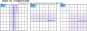
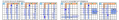
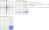
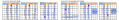

Franken/Mutant Exocet
Franken/Mutant Exocet は Exocet の CrossLine を拡張します。拡張 CrossLine上に Target を配置し、これによって SLine と Companion が決まります。
SLineが2つの CoverLine でカバーされるなら Exocet Locked が成立します。
拡張 CrossLine では、"Cross"の呼称は不自然ですが、素朴な Exocet の定義に従い、CrossLine を用います。
Franken/Mutant タイプ の CrossLineを選択し、Target、Companion、SLine を設定すると、 SLine のカバーとその評価は、標準のExocet と同じです。
CrossLine への拡張は、Exocet_Single、Exocet_SingleBase にも適用できます。
Exocet_FM サンプル
Exocet_FM_Single サンプル
Exocet_FM_SingleBase サンプル
拡張 CrossLine
basicな Exocet では、次の手順で CrossLine を定義します。
- Baseの位置と方向を決める。
- CrossBand-0 は Base 位置から決まる。
- CrossBand-n から CrossLine-n を選択する(n=1,2)。

拡張 CrossLine では、Baseの位置と方向、および CrossBand-0 を定めるまでは、同じです。
CrossLineの基となる Bandは、Cross-Band、Paralell-Band、Block-Band の 3タイプがあります。異なる Band 内に 2つの CrossLine-1、CrossLine-2 を定めます。
拡張 CrossLine では、複数の CrossLine が交差することがあります。Exocet の成立要件により、CrossLine が交差するセルは、Base候補数字を含むことができません。

次の図は、拡張 CrossLine の例です。
Target
3つの CrossLine の Escape 領域を除く位置に、2つの Target を配置します。2 Targets / 3 CrossLines であり、1つの CrossLine には Target はありません。

Companion
Companionは、Row-type、Column-type、Block-type の CrossLine に定義されます。
数独のセルには、行・列・ブロックの 3つの houseの制約があるので、Row/Column-type と Block-type では形が異なります。
また、確定 Companion と、他の CrossLine の関係で決まる Companion 候補(▲印のセル)があります。

2つの Target - Companion の合成で、Puzule の現局面の Companion が決まります。

SLine
Target を含む CrossLine に着目します。 CrossLine は、Target, Escape, SLine and Companion で構成されます。
SLine は、次式で定義されます。
SLine = CrossLine - (Target, Escape, Companion)
Exocet_FM_Single
Exocet Single は CrossLineが Franken/Mu(F/M) タイプにも適用できます。
Exocet_FM_Single サンプル

Exocet_FM_SingleBase
SingleBase は 他の Exocet アルゴリズムに比べて多くの解が求まります。
Franken/Mutant(F/M) 型でも同じで、多くの解が求まります。
Exocet_FM_Single サンプル